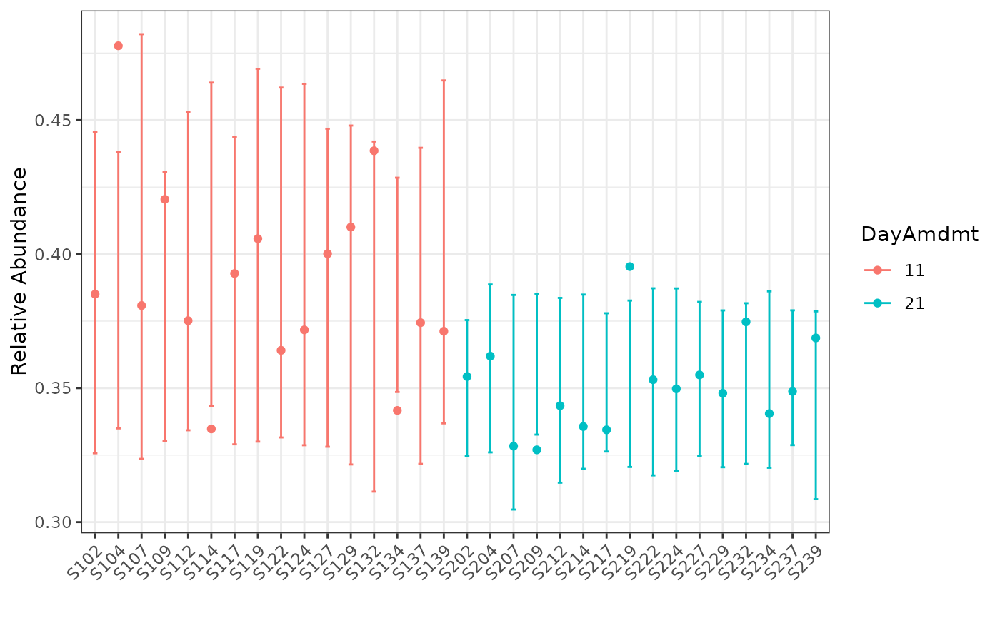

Plotting function
Usage
# S3 method for class 'bbdml'
plot(
x,
total = FALSE,
color = NULL,
shape = NULL,
facet = NULL,
title = NULL,
B = 1000,
sample_names = TRUE,
data_only = FALSE,
...
)Arguments
- x
Object of class
bbdml.- total
(Optional). Default
FALSE. Boolean indicator for whether to plot on total counts scale- color
(Optional). Default
NULL. The sample variable to map to different colors. Can be a single character string of the variable name insample_dataor a custom supplied vector with length equal to the number of samples. Use a character vector to haveggplot2default.- shape
(Optional). Default
NULL. The sample variable to map to different shapes. Can be a single character string of the variable name insample_dataor a custom supplied vector with length equal to the number of samples.- facet
(Optional). Default
NULL. The sample variable to map to different panels in a facet grid. Must be a single character string of a variable name insample_data.- title
(Optional). Default
NULL. Character string. The main title for the graphic.- B
(Optional). Default
1000. Integer. Number of bootstrap simulations for prediction intervals. UseB = 0for no prediction intervals.- sample_names
(Optional). Default
TRUE. Boolean. IfFALSE, remove sample names from the plot.- data_only
(Optional). Default
FALSE. Boolean. IfTRUE, only returns data frame.- ...
There are no optional parameters at this time.
Examples
data(soil_phylum_small_otu1)
mod <- bbdml(formula = cbind(W, M - W) ~ DayAmdmt,
phi.formula = ~ DayAmdmt,
data = soil_phylum_small_otu1)
# Here we use B = 50 for quick demonstration purposes.
# In practice, we recommend a higher value for B for more accurate intervals
plot(mod, color = "DayAmdmt", B = 50)
